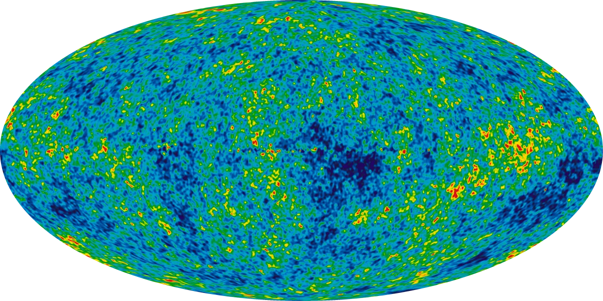

Articles in the proceedings of the German Physical Society's physics education division (PhyDid B) and in the International Journal of Engineering and Science Invention (IJESI).
2024 · PhyDid B · DPG Spring Meeting
Experimental and Theoretical Analysis of Quantum Computing
Philipp Schöneberg, Hans-Otto Carmesin, Phil Gustke, Jannes Ruder
In a student research club, we explain elemental concepts of quantum computing with theory and experiments. For it, we demonstrate multiple fundamental quantum gates. These quantum gates result in a valuable universal set. By using this set, we derive two known algorithms showing quantum supremacy. Moreover, we present and discuss an opportunity to multiply the calculation speed of quantum computing.
2022 · PhyDid B · DPG Spring Meeting
On Phase Transitions in the Early Universe
Hans-Otto Carmesin, Philipp Schöneberg
The continuous expansion of space since the Big Bang has been a great discovery of mankind. However, that continuous expansion is incomplete, as it fails to describe the physics at very high density and high energy of radiation quanta. In this paper, we provide a solution of that incompleteness problem by developing and analyzing a droplet model: Droplets of a dimension form and grow, as soon as the density falls below a corresponding critical density. At that dimensional phase transition, the light horizon increases in an extremely rapid manner. As a consequence, the horizon problem is solved.

2022 · International Journal of Engineering and Science Invention (IJESI)
Droplet Model Used to Analyze the Early Universe
The continuous expansion of space since the Big Bang has been a great discovery of mankind. However, that continuous expansion is incomplete, as it fails to describe the physics at very high density and small light radii. In this paper, we provide a solution of that incompleteness problem by developing and analyzing a droplet model: Droplets of high dimensional vacuum form and grow, as soon as the density exceeds a corresponding critical density. At these dimensional phase transitions, the light horizon increases in an extremely rapid manner. As a consequence, the horizon problem is solved.
2021 · PhyDid B · DPG Spring Meeting
Solution of the Horizon Problem
Philipp Schöneberg, Hans-Otto Carmesin
In this article we present a solution to the horizon problem, known since 1970, which asks how light waves could have thermalised the horizon of the expanding universe since the Big Bang. Our approach uses calculations, diagrams and a time evolution we developed ourselves, which we introduced in the article “Solution of a Density Problem in the Early Universe” (PhyDid B, pp. 43–46, spring meeting 2020). This time evolution uses dimensional transitions, which are directly related to the size of the universe and thus to the distance light waves have to travel. This allows us to show how, due to the initially high number of dimensions, distances were small and light waves could thermalise the horizon early on.
2020 · PhyDid B · DPG Spring Meeting
Solution of a Density Problem in the Early Universe
Philipp Schöneberg, Hans-Otto Carmesin
In this article we aim to solve a problem of general relativity. The solution leaves the macrocosm and draws on the microcosm to explain how it works. To explain it in detail, we present and discuss formulas, calculations, models, spreadsheets and diagrams. Finally, we demonstrate the solution with results based on real physical quantities.